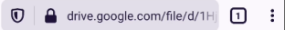

利用社会工程学准确定位智能手机
{kind=link}
Photo by Sajad Nori on Unsplash
前言
项目地址：thewhiteh4t/seeker
我们为什么不应该随意点击未知链接？为什么不应该随便授予重要权限？这会造成什么后果？
Seeker背后的概念很简单，就像我们用钓鱼网页来获取凭证一样，用一个假的网页来获取你的位置。
安装
这是在Arch Linux中安装，其它系统见项目安装文档。
下面是需要的包，如果没安装，使用 pacman 和 AUR助手（ngrok在AUR）进行安装
python python-pip php openssh ngrok
git clone https://github.com/thewhiteh4t/seeker.git
cd seeker
pip3 install requests
演示
环境
- 电脑: Arch Linux
- 目标手机: Android 10
开始
启动seeker
python3 seeker.py -t manual
{kind=link}
接下来就是选择钓鱼模板，默认为四选一。
模板根据实际情况进行选择或更改、制作
[0] NearYou:
NearYou模板最简单，输入 0 回车即可。
{kind=link}
[1] Google Dirve:
Google Drive模板需要填一个URL，什么URL都行，不过填 Google Drive File 的URL更具欺骗性。
URL的作用：钓鱼网页成功获取位置信息后跳转的正常网页。
{kind=link}
[2] WhatsApp:
WhatsApp模板需填入 Group Title 和 Group img。
{kind=link}
[3] Telegram:
Telegram同样需要填写一些群组信息。
{kind=link}
启动ngrok
再开一个终端，启动ngrok。
ngrok http 8080
{kind=link}
通过ngrok生成了2个URL，选择其中一个发给目标，等待即可。
目标手机端
先看看在目标手机端打开链接会发生什么。
链接
在目标手机上用浏览器打开链接，看到的就是之前模板生成的钓鱼网页。
NearYou:
{kind=link}
Google Dirve:
{kind=link}
WhatsApp:
{kind=link}
Telegram:
{kind=link}
权限
若目标点击CONTINUE、Request access、JOIN CHAT、VIEW IN TELEGRAM则会弹出权限请求。
{kind=link}
除Google Drive模板在点击允许后，会从的钓鱼网页进入到Google Drive的共享文件的URL界面外，其余三个模板均只有个弹窗并保持在钓鱼网页。
{kind=link}

在获取位置权限的事情上：
- NearYou设计为 Find People, Make Friends，获取位置权限是可以被接受的。
- 其它模板获取位置权限较为生硬。
- Google Drive在后来跳转到真实的共享文件，在一定程度上降低了可疑性。
至此，目标手机完成了以下过程：
- 点开链接进入钓鱼网页
- 允许钓鱼网页获取位置权限
- 进入到Google Drive共享文件页面（或停留在钓鱼网页）
注：
若由于某些原因（如目标手机未开启 位置信息/GPS 功能等）钓鱼网页未能获取到位置信息，对于Google Drive模板则不会跳转到后面的url网页。
电脑端
回到电脑端，看看在目标手机点击链接时发生了什么。
ngrok
当目标手机打开由ngrok生成的链接时，在ngrok界面可以看到相关的请求和响应。
{kind=link}
打开http://127.0.0.1:4040可以看到更详细的信息。
seeker
当目标手机允许网站获取位置权限后，在seeker界面看到成功获取的信息。
{kind=link}
（图中相关隐私信息已做处理）
seeker成功获取到了目标手机的经度、维度。点击Google Maps链接即可看到目标手机当前位置。除此之外，它还获取到了一些未经许可的设备信息。
一般地，如果目标接受位置渗透，定位精度将精确到大约30米。
本次演示的定位精度为40米左右。
准确度取决于多种因素，如：
- 设备 - 在GPS损坏的笔记本电脑或手机上无法工作
- 浏览器 - 一些浏览器阻止了javascripts
- GPS校准 - 如果GPS没有被校准
最后
这个工具是一个「概念证明」，仅用于教育目的，Seeker显示了一个恶意网站可以收集关于你和你的设备的哪些数据，以及为什么你不应该点击未知链接和允许重要权限，如位置等。